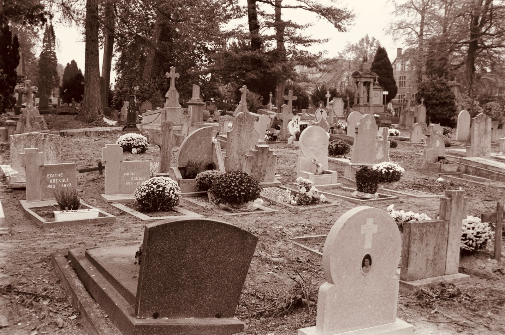
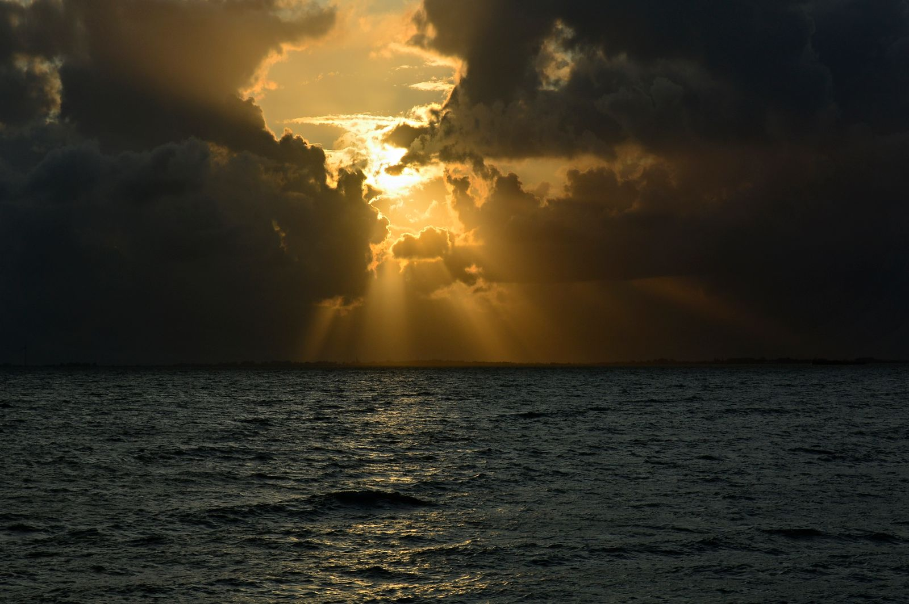

墓じまいとは？
進め方・費用相場・改葬手続きをFPが体験談で解説
遠方にあるお墓の管理が難しくなってきた、継ぐ人がいない——そんなとき検討したいのが「墓じまい」です。進め方の6ステップと費用相場、離檀料をめぐるトラブルの実態を、FPとして活動する筆者自身の体験を交えて解説します。


- 墓じまいの意味と、検討すべきタイミング
- 墓じまいの進め方（6ステップ）と費用相場
- 永代供養墓から海洋散骨・宇宙葬まで、改葬先の選択肢とFP目線のおすすめ
- 実際に経験して分かった、後悔しやすいポイント
墓じまいとは？「改葬」との違い
墓じまいとは、今あるお墓を撤去・解体して更地にし、墓地の管理者に使用権を返還することを指します。遺骨は取り出して、別の場所（永代供養墓や納骨堂、樹木葬など）へ移すのが一般的です。
この「遺骨を別の場所へ移すこと」自体は法律上「改葬」と呼ばれ、墓じまいはその改葬を含む一連の手続き全体を指す言葉として使われています。墓石の撤去だけでなく、行政手続きや寺院とのやり取りまで含む、範囲の広い作業です。
| 用語 | 指す範囲 |
|---|---|
| 改葬 | 遺骨を今のお墓から別の場所へ移すこと。改葬許可申請などの法律上の手続き名称 |
| 墓じまい | 改葬に加え、墓石の解体・撤去、墓地の使用権の返還までを含む一連の作業全体 |
つまり「改葬」は墓じまいの中に含まれる一手続きであり、「墓じまい」はそれを含むもっと広い言葉、という関係になります。
墓じまいを検討するタイミングはいつ？
墓じまいを考えるきっかけは、主に次の3つです。
| きっかけ | 特徴 |
|---|---|
| お墓が遠方にあり管理が難しい | 帰省のたびに草むしりや掃除に時間がかかり、体力的にも負担が大きくなってくる |
| 継ぐ人（跡継ぎ）がいない | 子どもがいない、または子どもに負担をかけたくないという理由で検討するケースが多い |
| 親の生前に方針を決めておきたい | 時間的な余裕を持って進められ、親子で対話しながら方針を決めやすい |
私自身が相談を受けたのは、まさに「お墓が遠方にある」ケースでした。片道3時間かけて墓参りに通っていたご家族が、体力の限界を感じて墓じまいを決断されました。
墓じまいの進め方｜6つのステップ
- 親族で方針を話し合う
墓じまい自体に抵抗を感じる親族もいるため、早い段階で意向をすり合わせておくことが重要です。 - 新しい納骨先（改葬先）を決める
永代供養墓・納骨堂・樹木葬・散骨など、遺骨をどこへ移すかを先に決めておきます。 - 「受入証明書」を改葬先から発行してもらう
改葬許可申請に必要な書類のひとつで、新しい納骨先が発行します。 - 今のお墓がある市区町村で「改葬許可申請」を行う
受入証明書と埋蔵証明書などを添えて申請し、「改葬許可証」の交付を受けます。 - お寺・霊園に墓じまいの意向を伝える（離檀の相談）
閉眼供養（魂抜き）の日程調整もあわせて行います。檀家の場合は離檀の手続きも必要です。 - 閉眼供養・遺骨の取り出し・墓石の解体撤去を行う
石材店に依頼し、更地にしてから墓地の管理者へ使用権を返還します。
墓じまいにかかる費用相場
| 作業内容 | 費用の目安 |
|---|---|
| 墓石の解体・撤去（1㎡あたり） | 10万〜15万円程度 |
| 閉眼供養（魂抜き）のお布施 | 3万〜5万円程度 |
| 離檀料 | 3万〜20万円程度（寺院により大きく異なる） |
| 改葬先（永代供養墓・納骨堂など） | 10万〜100万円程度 |
費用の中でもっとも幅が大きく、トラブルになりやすいのが「離檀料」です。法律上の支払い義務はありませんが、これまでのお寺との関係や地域の慣習によって、金額の受け止め方が大きく変わります。事前に相場感を持って臨むことが大切です。
改葬先の選択肢｜永代供養墓から海洋散骨・宇宙葬まで
改葬先の選択肢は、ここ数年で大きく広がりました。それぞれ初期費用だけでなく「その後の管理の手間・ランニングコスト」が大きく異なるため、ご家族の考え方に合わせて選ぶことが大切です。
| 改葬先 | 費用の目安 | その後の管理 |
|---|---|---|
| 永代供養墓 | 10万〜100万円程度 | お寺・霊園が供養を継続。年間管理料がかかる場合も |
| 納骨堂 | 20万〜150万円程度 | 契約期間ごとの更新料や年間管理料が発生することが多い |
| 樹木葬 | 15万〜80万円程度 | 永代供養タイプが多く、比較的管理は軽い |
| 海洋散骨 | 5万〜30万円程度 | お墓という「資産」を持たないため、以後の管理料・維持費が一切かからない |
| 手元供養 | 1万〜20万円程度（ミニ骨壺・アクセサリー加工など） | 自宅で保管するため管理費はかからないが、将来の引き継ぎ方は要検討 |
| 宇宙葬 | 25万〜50万円程度 | 遺骨の一部をロケットで打ち上げる形式が多く、地上での管理は発生しない |
FP目線でおすすめしたいのは「海洋散骨」
相続・終活の相談を受ける中で、費用面から特におすすめしたいのが海洋散骨です。最大のメリットは、お墓という「資産」を持たないため、年間管理料や将来また別の墓じまい費用が発生する心配がない、つまりランニングコストがゼロになる点にあります。永代供養墓や納骨堂は初期費用こそ抑えられても、契約内容によっては年間管理料や更新料が発生し続けることがあるため、目先の費用だけでなく長期的な支出まで含めて比較することをおすすめします。

近年注目されているのが「宇宙葬」です。遺骨の一部を専用カプセルに納めてロケットで打ち上げるサービスで、費用は他の選択肢よりやや高めですが、「宇宙が好きだった」「新しい形で送りたい」というご家族の想いに応える、ユニークな供養のかたちとして人気が広がっています。手元供養も、故人を身近に感じていたいという方に根強い支持があり、ミニ骨壺やアクセサリーへの加工など選択肢は年々広がっています。
費用と気持ちのどちらを優先するかは、ご家族によってさまざまです。複数の選択肢を並べて比較したうえで、納得のいく形を選ぶとよいでしょう。
体験談｜離檀の挨拶で感じた「関係」の重み
あるご家族の墓じまいに同行させていただいたときのことです。ご先祖代々お世話になってきたお寺への挨拶は、単なる事務手続きではありませんでした。
ご住職は快く送り出してくださいましたが、その場には「長年守ってきたものを手放す」という独特の緊張感がありました。費用や手続きだけを事前に調べていても、実際に向き合う場面ではそれだけでは足りない、人と人との関係の重みを感じた出来事でした。
結果として、そのご家族は改葬先に永代供養墓を選び、離檀料についても事前にお寺へ丁寧に相談したことで、大きなトラブルなく手続きを終えることができました。
墓じまいでよくある後悔・失敗パターン
- 親族への相談を後回しにする。事前に話さないまま進めると、後から「勝手に決めた」と反発を受けることがあります。
- 改葬先を決める前に墓石を撤去してしまう。改葬許可申請には改葬先の受入証明書が必要なため、順番を間違えると手続きがやり直しになります。
- 離檀料の相場を知らないまま交渉に臨む。相場観がないまま提示された金額に戸惑い、寺院との関係が気まずくなるケースもあります。
- 石材店を一社だけで決めてしまう。解体費用は業者によって差が大きく、複数社で見積もりを比較するのが基本です。
- 改葬許可の申請先を間違える。申請先は「今のお墓がある市区町村」であり、改葬先の自治体ではない点に注意が必要です。
一人で抱え込まないための相談先
墓石の解体・撤去は石材店に、改葬許可申請の書類作成は行政書士に相談することもできます。離檀料や親族間の調整で気持ちの整理がつかない場合は、終活・生前対策のアドバイザーに早めに話を聞いてみるのも一つの方法です。
改葬先の選び方によって、その後の管理の手間や費用が大きく変わります。永代供養か、納骨堂か、樹木葬か——ご家族の考え方に合わせて、複数の選択肢を比較検討することをおすすめします。
とはいえ、いざその日を迎えたとき、何から手をつければいいのか、誰に相談すればいいのか分からず、立ち止まってしまう方がほとんどです。墓じまいだけでなく、死後の手続き全般がそうです。僕が「おやこと」を作ったのは、まさにこの経験がきっかけでした。
よくある質問
墓じまいはいつから始めればいいですか？
親が元気なうちから改葬先の希望を確認しておくのが理想です。ただ、多くの方はお墓の管理が難しくなったタイミングで検討を始めます。いつ始めるにしても、まずは親族で方針を共有することが最初のステップです。
墓じまいにかかる期間の目安は？
改葬先探しから許可申請、閉眼供養、解体撤去までを含めると、3ヶ月〜半年程度かかるケースが多く見られます。お寺との調整に時間がかかると、さらに延びることもあります。
離檀料を払わないと墓じまいはできませんか？
離檀料の支払いは法律上の義務ではなく、拒否したことのみを理由に墓地の使用者が改葬を止められることはありません。ただし、これまでの感謝を形にする意味合いもあるため、金額も含めてお寺と丁寧に相談することをおすすめします。
墓じまい後、遺骨はどうすればいいですか？
永代供養墓や納骨堂への納骨のほか、樹木葬、海洋散骨、手元供養、宇宙葬など選択肢はさまざまです。特に海洋散骨はお墓を持たないためランニングコストがかからず、FP目線でもおすすめしやすい選択肢です。管理の手間や費用、ご家族の気持ちに合わせて選ぶのがよいでしょう。
墓じまいは自分たちだけで進められますか？
改葬許可申請の書類作成は自分たちで行うことも可能です。ただ、寺院との交渉や墓石の解体は専門性が異なるため、状況に応じて行政書士や石材店の力を借りたほうが、結果的に負担も抑えられることが多いです。
まとめ｜お墓を考えることは、これからを考えること
墓じまいとは、お墓を片付けることだけではありません。それは、ご先祖や家族とのつながりを見つめ直し、これからの供養のかたちを整える作業でもあります。
もし今、ご両親が元気でお墓の管理に不安を感じているなら、いつかその日が訪れる前に、少しだけ考えてみてはいかがでしょうか。お墓をどうするかを考えることは、これからを考えることでもあるのです。
墓じまいや死後の手続きは、何から始めればいいか分からないことがほとんどです。「おやこと」は、そうした一つひとつの手続きを、亡くなった日を基準にした具体的なタスクとして整理し、相談から実働の代行まで、必要な支援に一本の窓口からつなげるためのアプリです。